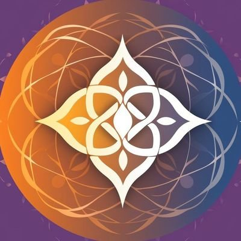

Loading ReligioDAO Blog
Initializing the decentralized blogging platform governed by the ReligioDAO community...
System Requirements
- Web3 wallet extension (MetaMask, WalletConnect, etc.)
- Connection to Q Network for governance
- For content creators: Access to Swarm for decentralized storage